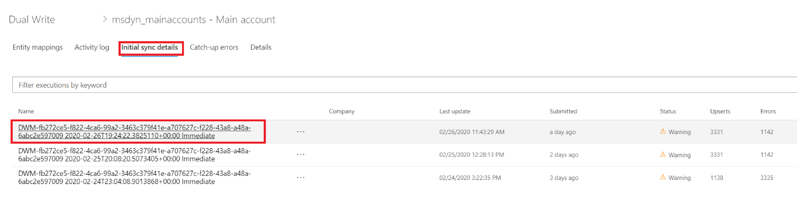
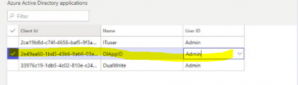
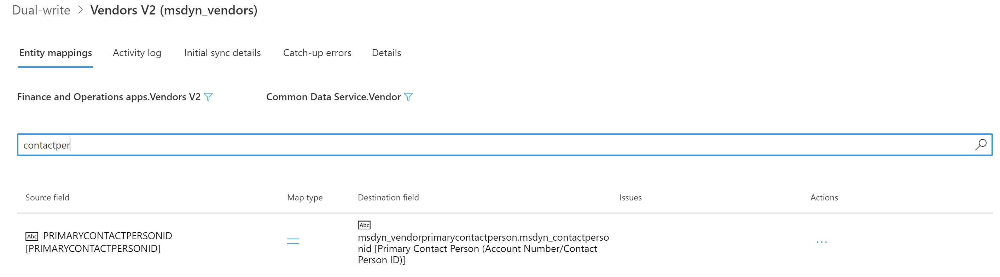
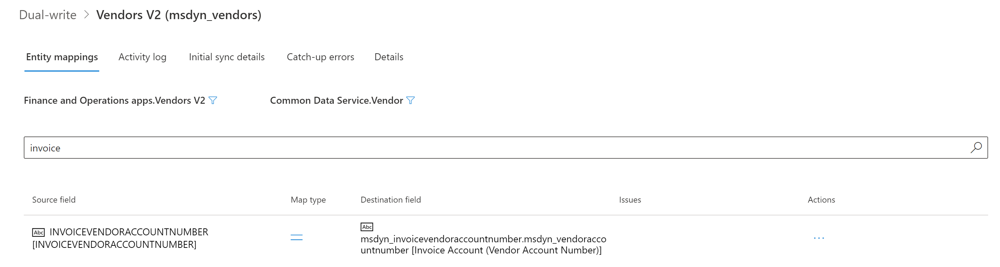
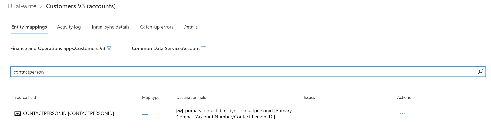
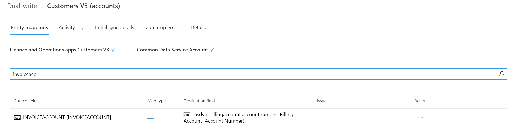
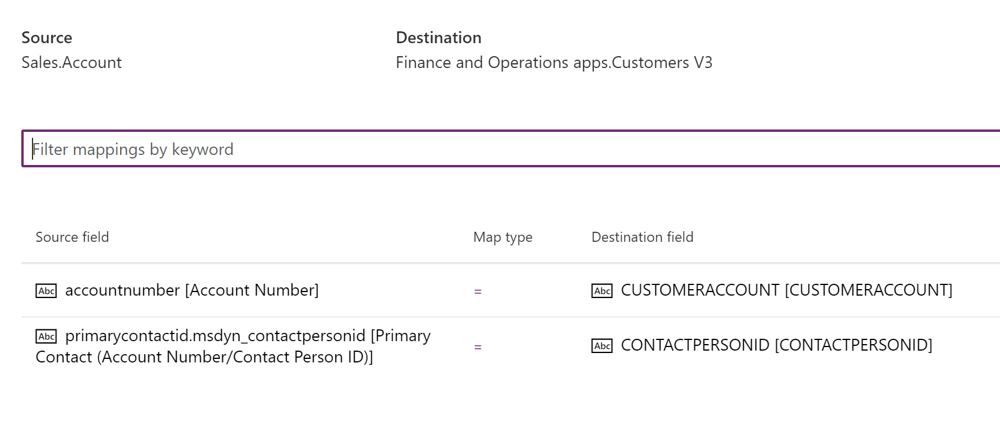

Probleme bei der anfänglichen Synchronisierung behandeln
[!include[banner](../../includes/banner.md)][!include[rename-banner](~/includes/cc-data-platform-banner.md)]Dieses Thema enthält Problembehandlungsinformationen zur dualen Schreibintegration zwischen den Apps Finance and Operations und Dataverse. Dieses Thema enthält insbesondere Informationen zur Fehlerbehebung, mit denen Sie Probleme beheben können, die mit der initialen Synchronisierung zusammenhängen.
Important
Einige der in diesem Thema behandelten Probleme erfordern möglicherweise entweder die Systemadministratorrolle oder Microsoft Azure Active Directory (Azure AD) Anmeldeinformationen des Mandantenadministrators. Im Abschnitt zu jedem Problem wird erläutert, ob eine bestimmte Rolle oder Anmeldeinformationen erforderlich sind.
Überprüfen Sie eine Finance and Operations App auf anfängliche Synchronisationsfehler
Nachdem Sie die Zuordnungsvorlagen aktiviert haben, sollte der Status der Zuordnungen lauten Laufen. Wenn der Status ist Nicht ausgeführt angezeigt wird, sind bei der ersten Synchronisierung Fehler aufgetreten. Um die Fehler anzuzeigen, wählen Sie die Anfängliche Synchronisierungsdetail Registerkarte auf der Duales Schreiben Seite.

Sie können die anfängliche Synchronisierung nicht abschließen: 400 Bad Request
Erforderliche Rolle zum Beheben der Fehler: System Administrator
Möglicherweise wird die folgende Fehlermeldung angezeigt, wenn Sie versuchen, das Mapping und die anfängliche Synchronisierung auszuführen:
([Unzulässige Anforderung], der Remote-Server hat einen Fehler zurückgegeben: (400) Unzulässige Anforderung), AX beim Export ist ein Fehler aufgetreten
Hier ist ein Beispiel für die vollständige Fehlernachricht.
Dual write Initial Sync completed with status: Error. Following are the details:
Executed leg: From AX Financial dimensions to CRM msdyn_dimensionattributes
with exported records count: 0, ImportRecordsErrorCount: 0,
ImportRecordsInsertedCount: 0 and ImportRecordsUpdatedCount: 0
ErrorsDetails:
Dual write Initial sync failed
Message: ([Bad Request], The remote server returned an error: (400) Bad Request.), AX export encountered an error
Stacktrace: at
Microsoft.Dynamics.Integrator.QueryGenerator.AxClient.\<ExportAxPackage\>d__16.MoveNext()
in X:\\bt\\1024532\\repo\\src\\Core\\QueryGenerator\\AxClient.cs:line 265
\--- End of stack trace from previous location where exception was thrown ---
at System.Runtime.ExceptionServices.ExceptionDispatchInfo.Throw()
at System.Runtime.CompilerServices.TaskAwaiter.HandleNonSuccessAndDebuggerNotification(Task task)
at Microsoft.D365.ServicePlatform.Context.ServiceContext.Activity.\<ExecuteAsync\>d__11\`2.MoveNext()
\--- End of stack trace from previous location where exception was thrown ---
Wenn dieser Fehler konsistent auftritt und Sie die anfängliche Synchronisierung nicht abschließen können, führen Sie die folgenden Schritte aus, um das Problem zu beheben.
- Melden Sie sich bei der virtuellen Maschine (VM) für die Finance and Operations App an.
- Öffnen Sie die Microsoft Management Console.
- In dem Bereich Dienstleistungen stellen Sie sicher, dass der Microsoft Dynamics 365 Data Import Export Framework-Dienst wird ausgeführt. Starten Sie ihn neu, wenn er gestoppt wurde, da die anfängliche Synchronisierung dies erfordert.
Anfänglicher Synchronisationsfehler: 403 Forbidden
Während der ersten Synchronisierung wird möglicherweise die folgende Fehlermeldung angezeigt:
([Forbidden], der Remote-Server hat einen Fehler zurückgegeben: (403) Forbidden.), AX beim Export ist ein Fehler aufgetreten
Führen Sie folgende Schritte aus, um das Problem zu beheben.
- Bei der Finance and Operations App anmelden.
- Auf der Azure Active Directory Anwendungen Seite löschen Sie den DtAppID Client, und fügen Sie ihn dann erneut hinzu.

Selbstreferenzfehler oder Zirkelreferenzfehler während der ersten Synchronisation
Möglicherweise wird eine Fehlernachricht angezeigt, die dem folgenden Beispiel ähnelt, wenn eine Ihrer Zuordnungen Selbstreferenzen oder Zirkelreferenzen enthält: Die Fehler fallen in folgende Kategorien:
- Fehler in der Tabellenzuordnung Lieferanten V2 zu msdyn_vendors
- Fehler in der Tabellenzuordnung Kunden V3 zu Konten
Fehler in der Tabellenzuordnung von Lieferanten V2 zu msdyn_vendors beheben
Möglicherweise treten auf dem Computer die folgenden anfänglichen Synchronisierungsfehler für die Zuordnung Lieferanten V2 zu msdyn_vendors auf, wenn die Tabellen vorhandene Zeilen mit Werten in den Feldern PrimaryContactPersonId und InvoiceVendorAccountNumber haben. Diese Fehler passieren, weil InvoiceVendorAccountNumber ein selbstreferenzierendes Feld ist und PrimaryContactPersonId eine Zirkelreferenz in der Lieferantenzuordnung ist.
Die Fehlermeldungen, die Sie erhalten, haben das folgende Formular.
Die Anleitung für das Feld konnte nicht aufgelöst werden: <field>. Die Suche wurde nicht gefunden: <value>. Versuchen Sie diese URLs, um zu überprüfen, ob die Referenzdaten vorhanden sind: https://focdsdevtest2.crm.dynamics.com/api/data/v9.0/<entity>?$select=<field>&$filter=<field> eq <value>
Im Folgenden finden Sie einige Beispiele hierfür:
- Die Anleitung für das Feld konnte nicht aufgelöst werden: msdy_vendorprimarycontactperson.msdyn_contactpersonid. Die Suche wurde nicht gefunden: 000056. Versuchen Sie diese URLs, um zu überprüfen, ob die Referenzdaten vorhanden sind:
https://focdsdevtest2.crm.dynamics.com/api/data/v9.0/contacts?$select=msdyn_contactpersonid.contactid&$filter=msdyn_contactpersonid eq '000056' - Die Anleitung für das Feld konnte nicht aufgelöst werden: msdyn_.invoicevendoraccountnumber.msdyn_vendoraccountnumber. Die Suche wurde nicht gefunden: V24-1. Testen Sie diese URL(s), um zu prüfen, ob die Referenzdaten vorhanden sind:
https://focdsdevtest2.crm.dynamics.com/api/data/v9.0/msdn_vendors?$select=msdyn_vendoraccountnumber,msdyn_vendorid&$filter=msdyn_vendoraccountnumber eq 'V24-1'
Wenn Sie Zeilen mit Werten in der Lieferantenentität in den Feldern PrimaryContactPersonID und InvoiceVendorAccountNumber haben, führen Sie die Schritte im folgenden Abschnitt aus, um die erste Synchronisierung erfolgreich abzuschließen.
In der Finance and Operations App löschen Sie die PrimaryContactPersonId und InvoiceVendorAccountNumber Felder aus der Zuordnung und speichern Sie die Änderungen.
Wählen Sie auf der Zuordnungsseite für duales Schreiben für Lieferant V2 (msdyn_vendors) auf der Registerkarte Tabellenzuordnungen im linken Filter Finance and Operations apps.Vendors V2 aus. Wählen Sie im rechten Filter Sales.Vendor.
Suchen Sie nach Hauptkontaktperson, um das Quellfeld zu finden PrimaryContactPersonId.
Wählen Sie Aktionen und dann Löschen.

Wiederholen Sie diese Schritte, um das Feld InvoiceVendorAccountNumber zu löschen.

Speichern Sie Ihre Änderungen am Mapping.
Deaktivieren Sie die Änderungsverfolgung für Anbieter V2 Entität.
Im Arbeitsbereich Datenmanagement wählen Sie die Kachel Datentabellen aus.
Wählen Sie die Entität Anbieter V2 aus.
Wählen Sie im Aktionsbereich Optionen und wählen Sie dann Änderungsnachverfolgung.

Wählen Sie Änderungsverfolgung deaktivieren.

Führen Sie die erste Synchronisierung erneut für die Anbieter V2 (msdyn_vendors) Zuordnung aus. Die erstmalige Synchronisierung sollte ohne Fehler erfolgreich ausgeführt werden.
Führen Sie die erste Synchronisierung für CDS-Kontakte V2 (Kontakte) Zuordnung aus. Sie müssen diese Zuordnung synchronisieren, wenn Sie das primäre Kontaktfeld auf der Entität des Lieferanten synchronisieren möchten, da die Kontaktzeilen zunächst synchronisiert werden müssen.
Fügen Sie die Felder PrimaryContactPersonId und InvoiceVendorAccountNumber wieder der Anbieter V2 (msdyn_vendors) Zuordnung hinzu und speichern Sie die Zuordnung.
Führen Sie die erste Synchronisierung noch einmal für die Anbieter V2 (msdyn_vendors) Zuordnung aus. Weil die Änderungsnachverfolgung deaktiviert ist, werden alle Zeilen synchronisiert.
Aktivieren Sie die Änderungsverfolgung für die Anbieter V2 Entität.
Beheben von Fehlern in der Tabellenzuordnung von Kunden V3 zu Konten
Möglicherweise treten auf dem Computer die folgenden anfänglichen Synchronisierungsfehler von Kunden V3 zu Konten auf, wenn die Tabellen vorhandene Zeilen mit Werten in den Feldern ContactPersonID und InvoiceAccount haben. Diese Fehler passieren, weil InvoiceAccount ein selbstreferenzierendes Feld ist und ContactPersonId eine Zirkelreferenz in der Lieferantenzuordnung ist.
Die Fehlermeldungen, die Sie erhalten, haben das folgende Formular.
Die Anleitung für das Feld konnte nicht aufgelöst werden: <field>. Die Suche wurde nicht gefunden: <value>. Versuchen Sie diese URLs, um zu überprüfen, ob die Referenzdaten vorhanden sind: https://focdsdevtest2.crm.dynamics.com/api/data/v9.0/<entity>?$select=<field>&$filter=<field> eq <value>
Im Folgenden finden Sie einige Beispiele hierfür:
- Die Anleitung für das Feld konnte nicht aufgelöst werden: primarycontactid.msdyn_contactpersonid. Die Suche wurde nicht gefunden: 000056. Versuchen Sie diese URLs, um zu überprüfen, ob die Referenzdaten vorhanden sind:
https://focdsdevtest2.crm.dynamics.com/api/data/v9.0/contacts?$select=msdyn_contactpersonid.contactid&$filter=msdyn_contactpersonid eq '000056' - Die Anleitung für das Feld konnte nicht aufgelöst werden: msdyn_billingaccount.accountnumber. Die Suche wurde nicht gefunden: 1206-1. Versuchen Sie diese URLs, um zu überprüfen, ob die Referenzdaten vorhanden sind:
https://focdsdevtest2.crm.dynamics.com/api/data/v9.0/accounts?$select=accountnumber.account&$filter=accountnumber eq '1206-1'
Wenn Sie Zeilen mit Werten in der Lieferantenentität in den Feldern ContactPersonID und InvoiceAccount haben, führen Sie die Schritte im folgenden Abschnitt aus, um die erste Synchronisierung erfolgreich abzuschließen. Sie können diesen Ansatz für alle sofort einsatzbereiten Tabellen wie Konten und Kontakte verwenden.
In der Finance and Operations App löschen Sie Felder ContactPersonID und InvoiceAccount aus der Zuordnung Kunden V3 (Konten) und speichern Sie dann die Zuordnung.
Wählen Sie auf der Zuordnungsseite für duales Schreiben für Kunden V3 (Konten) auf der Registerkarte Tabellenzuordnungen im linken Filter Finance and Operations app.Customers V3 aus. Wählen Sie im rechten Filter Dataverse Konto.
Suchen Sie nach contactperson, um das Quellfeld ContactPersonID zu finden.
Wählen Sie Aktionen und dann Löschen.

Wiederholen Sie diese Schritte, um das Feld InvoiceAccount zu löschen.

Speichern Sie Ihre Änderungen am Mapping.
Deaktivieren Sie die Änderungsverfolgung für Debitor V3 Entität.
Im Arbeitsbereich Datenmanagement wählen Sie die Kachel Datentabellen aus.
Wählen Sie die Entität Customers V3 aus.
Wählen Sie im Aktionsbereich Optionen und wählen Sie dann Änderungsnachverfolgung.
Wählen Sie Änderungsverfolgung deaktivieren.
Führen Sie die erste Synchronisierung nochmals für die Debitoren V3 (Konten) Zuordnung aus. Die erstmalige Synchronisierung sollte ohne Fehler erfolgreich ausgeführt werden.
Führen Sie die erste Synchronisierung für CDS-Kontakte V2 (Kontakte) Zuordnung aus.
Note
Es gibt zwei Karten mit demselben Namen. Stellen Sie sicher, dass Sie jene Zuordnung mit der folgenden Beschreibung auf der Registerkarte Details auswählen: Duales Schreiben für die Synchronisierung zwischen FO.CDS-Kontakten V2 und CDS.Contacts. Benötigt neues Paket [Dynamics365SupplyChainExtended].
In der App fügen Sie die Felder InvoiceAccount und ContactPersonID wieder der Kunden V3 (Konten) Zuordnung hinzu und speichern Sie dann die Zuordnung. Jetzt sind das Feld Rechnungskonto und das Feld ContactPersonID wieder Teil des Live-Synchronisationsmodus. Im nächsten Schritt machen Sie die anfängliche Synchronisierung für diese Felder.
Führen Sie die erste Synchronisierung noch einmal für die Debitoren V3 (Konten) Zuordnung aus. Da die Änderungsverfolgung deaktiviert ist, werden die Daten für InvoiceAccount und ContactPersonId von der Finance and Operations App zu Dataverse synchronisiert.
Um die Daten für Rechnungskonto und ContactPersonId von Dataverse zu Finance and Operations zu synchronisieren, müssen Sie ein Datenintegrationsprojekt verwenden.
Erstellen Sie in Power Apps ein Datenintegrationsprojekt zwischen den Tabellen Sales.Account und Finance and Operations apps.Customers V3. Die Datenrichtung muss von Dataverse zu Finance and Operations App sein. Weil Rechnungskonto ein neues Attribut in dualem Schreiben ist, wollen Sie möglicherweise die anfängliche Synchronisierung dazu überspringen. Weitere Informationen finden Sie unter Datenintegration in Dataverse.
Das folgende Illustration zeigt ein Projekt, das Kundenkonto und ContactPersonId aktualisiert.

Fügen Sie die Firmenkriterien im Filter auf der Seite von Dataverse ein, da nur die Zeilen, die den Filterkriterien entsprechen, in der Finance and Operations-App aktualisiert werden. Wählen Sie zum Hinzufügen die Schaltfläche Filter. In dem Dialog Abfrage bearbeiten können Sie eine Filterabfrage hinzufügen wie _msdyn__company_value eq<guid>.
[HINWEIS] Wenn die Schaltfläche „Filter“ nicht vorhanden ist, erstellen Sie ein Supportticket, um das Datenintegrationsteam zu bitten, die Filterfunktion für Ihren Mandanten zu aktivieren.
Wenn Sie keine Filterabfrage für _msdyn_company_value eingeben, werden alle Zeilen synchronisiert.

Die anfängliche Synchronisierung der Zeilen ist nun abgeschlossen.
Aktivieren Sie die Änderungsnachverfolgung für Finance and Operations auf der Entität Debitor V3.